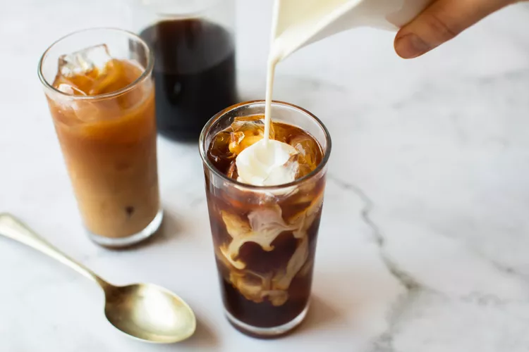
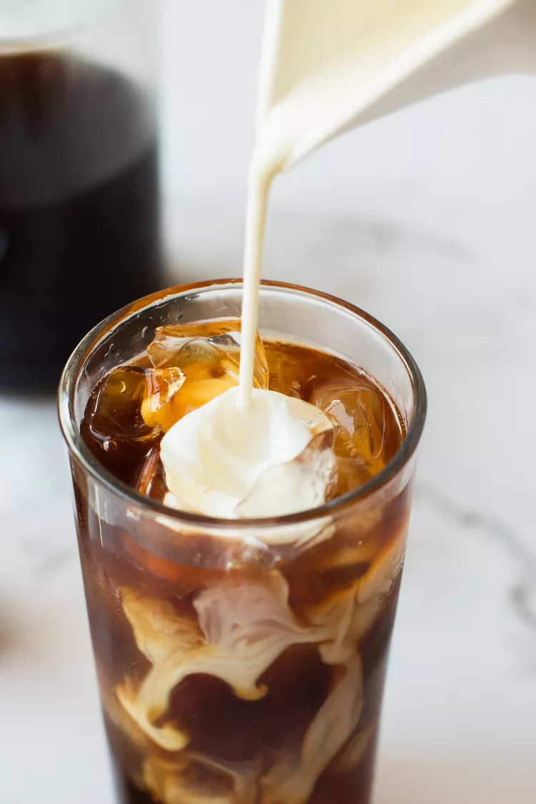

HOMEMADE COFFEE CREAMER

I take my coffee seriously. I’m the type of person that settles down for bed dreaming about my morning coffee. After my second son was born, a college friend gifted me 10 pounds of coffee—it’s my favorite gift to date. I felt seen—she knows what’s essential when you have a newborn
Usually, I take my coffee simply with whole milk, no sugar—I’m still a full-fat dairy girly and proud of it. But as warmer days roll in, I crave a little afternoon “coffee cocktail” as I lovingly refer to them to my family. Something a little sweet, a little creamy, and special-tasting—like a cold brew with vanilla coffee creamer—to get through the hardest part of the day. (Mom of two little boys here!)
Getting to a local coffee shop is not always possible and is a habit that is not appreciated by my bank account. There are some amazing coffee creamers at the grocery store these days, but like almost everything we consume, those prices are rising. So lately I’ve been making a homemade version of vanilla coffee creamer to combat this craving. It uses ingredients I always have on hand; I can batch it, so it waits for me in the fridge; and I can adapt it each time with new flavors. Plus, there are no additives or preservatives like popular store-bought brands.

4 Easy Tips For Making My Homemade Vanilla Coffee Creamer
- I use brown sugar because I like the nuanced molasses note, but you could use granulated sugar, honey, or even maple syrup. I only use 1/2 cup of sugar for the whole batch, but if you like things very sweet, bump it up to 3/4 cup.
- Once that milky syrup cools down, add in your preferred “base milk.” I like to use whole milk, but anything from 1% to half-and-half works.
- Flavor it to your taste. I like using pure vanilla extract or vanilla bean paste. If you want to spice things up, toss a few cinnamon sticks or cardamom pods into the milk while it simmers, then strain and let cool before using.
- For reference, label your homemade creamer with the sell-by date on the milk you used. Once you hit that date, check your creamer. If it smells off or is no longer smooth, discard it.
Ingredients
- 4 cups whole milk, divided (or your milk of choice)
- 1/2 cup dark brown sugar (or your sweetener of choice)
- 2 teaspoons vanilla extract (or vanilla bean paste)
Method
- Slowly simmer the milk and sugar:
Combine 2 cups of milk and the brown sugar in a small, heavy-bottomed saucepan. Set it over low heat, and stir to dissolve the sugar.
Let the mixture come to a simmer slowly over low heat for about 30 to 35 minutes, until reduced to about 3/4 of its original volume (you'll have about 1 1/2 cups in the pan). Do not stir it while it simmers. It will take on a light golden brown color.
While the milk simmers, foam or film may form on the surface. Gently scrape it off with a spoon, and discard it.
- Cool the creamer:
Remove the milk syrup away from the heat and let it cool until warm to the touch.
Add the remaining 2 cups of milk and vanilla, and stir to combine.
- Store:
Pour it into a quart-sized lidded container and refrigerate. Refer to the sell-by date on the dairy you used for how long the creamer will last in the fridge.